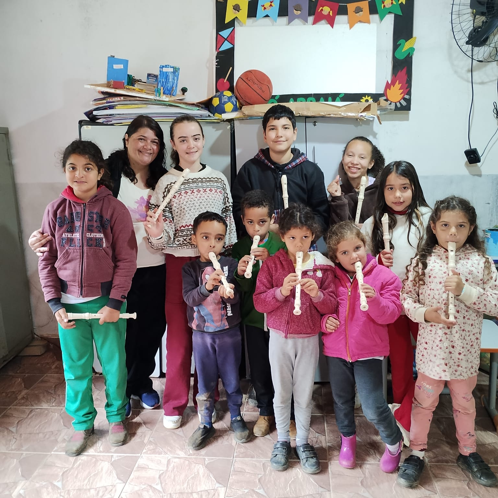

Musicalização
Desenvolvimento da percepção musical, da escuta, do ritmo e da expressão.
Música, formação e cultura nas comunidades da Serra da Mantiqueira.
Tenho interesse em participarO SSS da Mantiqueira — Sopro, Sonho e Semeadura da Cultura de Bandas Tradicionais é um projeto da Associação Parceiros Nota 10, responsável pela Corporação Musical Visconde de Mauá (COMVIMA), voltado à formação musical e à valorização da tradição das bandas de música.
A iniciativa amplia o acesso à educação musical, promove o contato com instrumentos e a prática coletiva e contribui para a continuidade de uma tradição cultural que atravessa gerações.
Por meio de atividades educativas e musicais, o projeto busca desenvolver conhecimentos, habilidades e experiências que fortaleçam a participação cultural, a convivência e o vínculo das comunidades com a música.
Promover a formação musical e valorizar a cultura das bandas tradicionais, ampliando oportunidades de aprendizagem e participação cultural em comunidades da Serra da Mantiqueira.

Realização: Associação Parceiros Nota 10 — Corporação Musical Visconde de Mauá (COMVIMA).
Projeto apoiado pela Política Nacional Aldir Blanc (PNAB), por meio do Governo de Minas Gerais e da Secretaria de Estado de Cultura e Turismo.
As atividades são planejadas para desenvolver conhecimentos musicais e preparar os participantes para a prática individual e coletiva.
Desenvolvimento da percepção musical, da escuta, do ritmo e da expressão.
Introdução à leitura e à compreensão da linguagem musical, de acordo com o nível de aprendizagem.
Aproximação com os instrumentos utilizados na formação de bandas de música.
Exercícios e atividades em grupo para desenvolver a escuta, a cooperação e a execução musical conjunta.
Contato com o repertório, a história e a importância cultural das bandas de música.
Estímulo à disciplina, à concentração, à convivência e à participação comunitária.
As atividades e os instrumentos disponíveis podem variar conforme a localidade, a turma e a etapa de formação.
O projeto desenvolve atividades em diferentes localidades da Serra da Mantiqueira. Confira abaixo as informações de atendimento de cada localidade.
Casa Viva
Dia: quinta-feira
Manhã: 9h às 11h30
Tarde: 13h às 16h
Edifício Mário Vani Benfica
Dia: quinta-feira
Horário: 10h às 11h30
Idade informada: a partir de 6 anos
Salão Comunitário
Dia: quinta-feira
Horário: 13h às 15h
Idade informada: a partir de 9 anos
Clube Visconde de Mauá
Quarta-feira: 19h às 21h
Idade informada: a partir de 6 anos
Quinta-feira: 18h às 20h
Idade informada: a partir de 9 anos
Atividade: Oficina Mestre de Banda
Escola das Flores
Dia: quinta-feira, quinzenalmente
Horário: 9h às 10h
Idade informada: a partir de 6 anos
Os horários, os locais específicos e a disponibilidade de vagas devem ser confirmados com a equipe antes da participação. A programação pode variar conforme o calendário de atividades do projeto.
Confirmar horários pelo WhatsAppO projeto busca ampliar o acesso à formação musical e oferecer oportunidades de aprendizagem para pessoas interessadas em conhecer e praticar música.
A idade mínima, a disponibilidade de vagas e os critérios de participação podem variar conforme a localidade e a turma.
Entre em contato com a equipe. Vamos orientar você sobre as possibilidades de participação.
Quer participar do SSS da Mantiqueira? Entre em contato com a equipe para receber orientações sobre vagas, horários e próximos passos.
Informe que deseja participar do SSS da Mantiqueira.
Diga seu nome, idade, localidade e telefone para contato.
A equipe informará sobre a disponibilidade de vagas, os horários e os próximos passos.
O contato representa uma manifestação de interesse e não garante automaticamente uma vaga. A participação depende da disponibilidade de atendimento e da confirmação da equipe.
Quer saber se há vagas na sua localidade? Precisa confirmar os horários ou entender como funciona a formação musical?
A equipe da Associação Parceiros Nota 10 — COMVIMA pode orientar você sobre as atividades, os locais de atendimento e as formas de participação.
Ao entrar em contato, informe que sua dúvida é sobre o SSS da Mantiqueira — Sopro, Sonho e Semeadura da Cultura de Bandas Tradicionais.
O SSS da Mantiqueira acredita na música como caminho de aprendizagem, expressão e participação cultural. Ao aproximar as comunidades da formação musical e da tradição das bandas, o projeto ajuda a manter viva uma importante manifestação da cultura regional.
COMVIMA — Transformando vidas através da música.